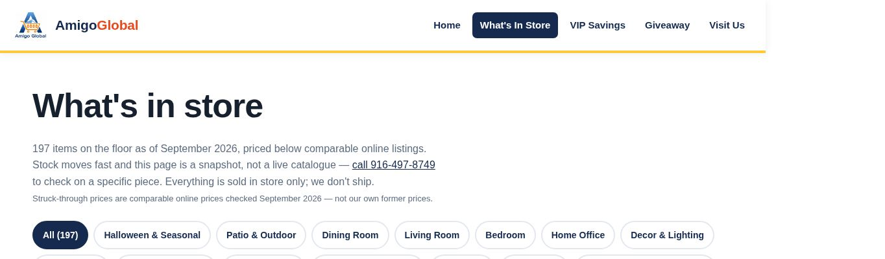

A REAL PLACE
Storefront and floor photography make the physical experience easy to picture.

 PREPARED FOR / AmigoLET’S TALK ↗
PREPARED FOR / AmigoLET’S TALK ↗We’re a local Sacramento team helping local businesses get more leads, inquiries and bookings. We run local Meta ads on Facebook and Instagram, create the content for those ads, and improve local SEO: how people find you through your Google Business Profile, website and helpful blog content.
SEE WHAT WE FOUND ↘

REAL BUSINESS IMAGERY. A TAILORED VESSEL PROPOSAL.
We went through your website, Google listing and public marketing as a shopper deciding whether to make the trip, and as an owner deciding where the next marketing effort should go. This short review shows what is working, where someone could hesitate, and what we would help improve.
You already give shoppers something useful: real store photos, departments they can browse, and clear hours and directions. That is a strong starting point for a store where the next find is part of the appeal.
Storefront and floor photography make the physical experience easy to picture.
Department filters and an inventory snapshot give shoppers a starting point.
Hours, directions and a tap-to-call route are visible on the official site.
What is working: official website, reviewed October 20, 2026.
The opportunity is to make the store feel as current online as it does when a new shipment arrives. These are possible points of friction, not measured lost customers.
On October 20, the inventory introduction still described its stock snapshot as September 2026 and asked shoppers to call to check a piece.
Someone interested in a specific item may put off the trip when they cannot tell whether it is still there. The call route helps, but it adds another step.
Add a simple ‘new this week’ section with an update date and clear availability notes. Agree with store staff who updates arrivals and removes sold items.
The homepage promotes weekly arrivals, but we did not find a new-arrival signup form there. Its main routes are browsing, calling and getting directions.
A shopper who likes the store but is not ready to visit has no obvious way on that page to ask for the next stock update.
Add an optional stock-alert signup with clear consent. Use approved weekly highlights to bring people back to the relevant department and store directions.
The homepage has real store photographs. We did not find a video player or video element on the page we inspected.
For furniture and everyday goods, a quick demonstration can answer questions about size, condition and use before someone makes the trip.
Film staff picks, new-pallet reveals and useful product demonstrations. Use the clips on the website and, when approved, in local Facebook and Instagram ads. Include current stock notes and one clear visit action.
Google Maps showed 3.6 stars from 15 reviews. A visible owner reply explains a move away from the earlier bin-store format, while current website photos show a developed retail floor.
Someone comparing stores may see older expectations before they understand what the store offers today. The small review count makes this a snapshot, not a complete picture of customer sentiment.
Publish a clear current store introduction, refresh Google profile photos and align stock expectations. Ask real visitors for honest reviews in a neutral way, then monitor recurring questions without promising a rating increase.

Captured October 20, 2026. The page describes September inventory and directs availability questions to the store.
Fresh mobile lab run: Performance 99/100, LCP 2.0s, TBT 0ms and CLS 0. No field data was available. This is a strong baseline to preserve while adding video; keep media lightweight. Tested October 20, 2026 with Lighthouse 13.5, emulated Moto G Power and Slow 4G; a single run, not every visitor’s experience.
Google Maps directly showed 3.6 stars / 15 reviews, 2800 Power Inn Road and (916) 497-8749, matching the official site. This is a dated snapshot, not a review-trend study.
Instagram showed 1,331 followers and a grid of Reels. Opening a post required sign-in, so exact post dates and engagement were not established. Bring existing social video into the website journey.
The US active-ad keyword search returned unrelated advertisers, not a verified Amigo match. This is inconclusive, not proof of no advertising. Cloudflare analytics was observed on the homepage.
Inventory, call and directions were inspected. No purchase or form was submitted.
No homepage JSON-LD block was found. For “where to buy discounted furniture in Sacramento,” the collapsed Google AI Overview showed Expo Furniture Gallery; the full AI Mode answer could not be inspected reliably. No absence or ranking claim is made.
We reviewed public pages only; private account data and business outcomes were not available.
A few terms used in the checks: Google Business Profile is your listing in Maps and local search. SEO means making the business easier to find in search. A lab speed test simulates one phone visit; field data summarizes real visits. LCP measures when the main content appears, TBT measures delays before a page responds, and CLS measures content jumping around. JSON-LD is extra website code that describes the business to search tools. GTM (Google Tag Manager) manages website tracking tags. Core Web Vitals are Google’s checks for loading, responsiveness and visual stability. Origin data covers the whole website; URL data covers the tested page. INP measures how quickly the page responds after a tap or click. GA4 means Google Analytics 4, a tool for measuring website visits and actions.
Here is the work we could take off your team’s plate, starting with the fixes above.
Update the weekly arrivals feature, campaign links and availability notes with your store team.
Plan product stories, film in store, edit short videos sized for phone screens and prepare captions for approval.
Review existing ad accounts, build local creative tests when approved and report calls, direction clicks and offer uses linked to a campaign.
Three starting concepts for an approved pilot. Open a card to see the shot plan.
Open on a sealed pallet, show the unpacking, then three standout finds. Finish on the store entrance and hours.
A team member demonstrates one item, shows its condition and explains who it might suit.
A compact floor tour across furniture, kitchen and everyday goods. Use current stock, with clear availability notes.
Agree on the priority. Make the first improvement. Check what changed before adding more.
Confirm the inventory owner, current offers, permissions and measurement. Choose the first three film ideas.
Shoot the pilot, build the weekly-arrivals feature and connect calls, directions and optional alerts.
Review which stories drive useful actions. Agree on a practical filming and website-update schedule.
We would agree on scope, timing, access and approvals with your team before starting.
Two client examples. A public work sample. A few reasons to take a closer look.
5.0 / 18 Google reviews ↗
As displayed on Vessel’s website, October 20, 2026.
 Vessel client / published creative work
Vessel client / published creative work Megan Meyerdick · Precision Home Loans
Megan Meyerdick · Precision Home Loans